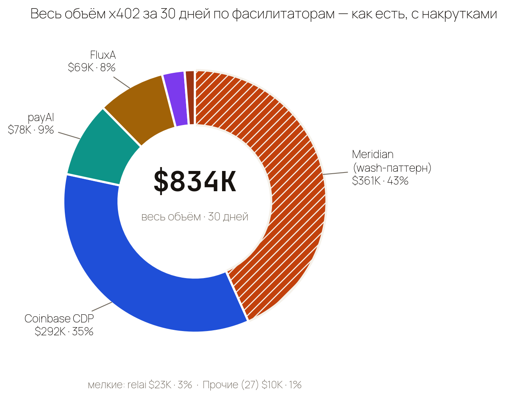
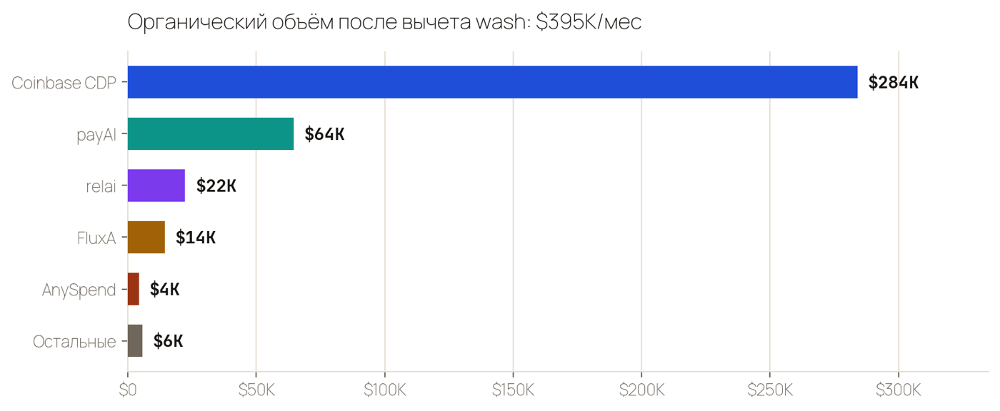
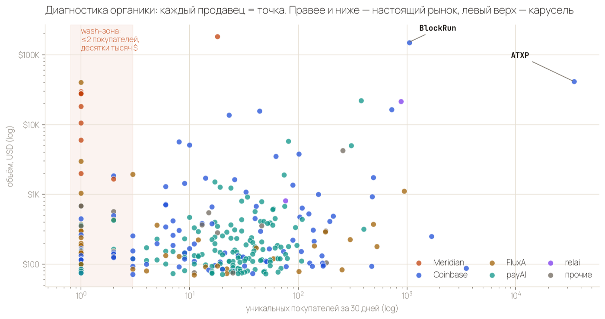
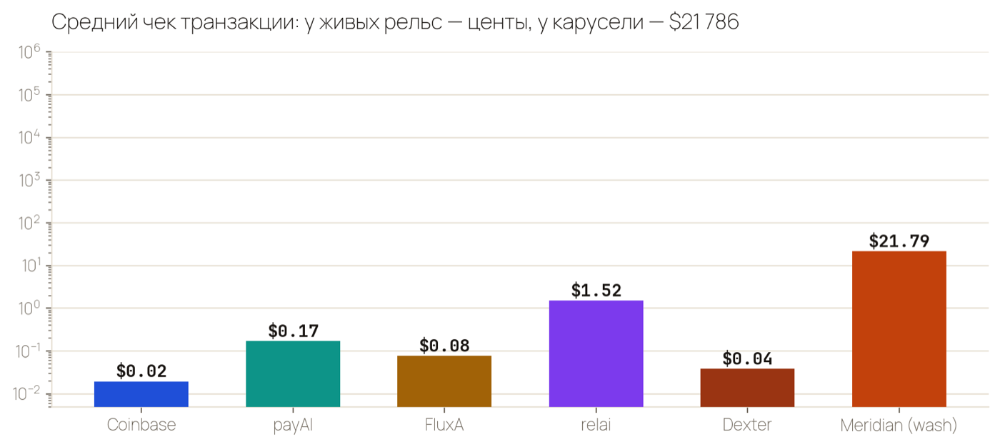
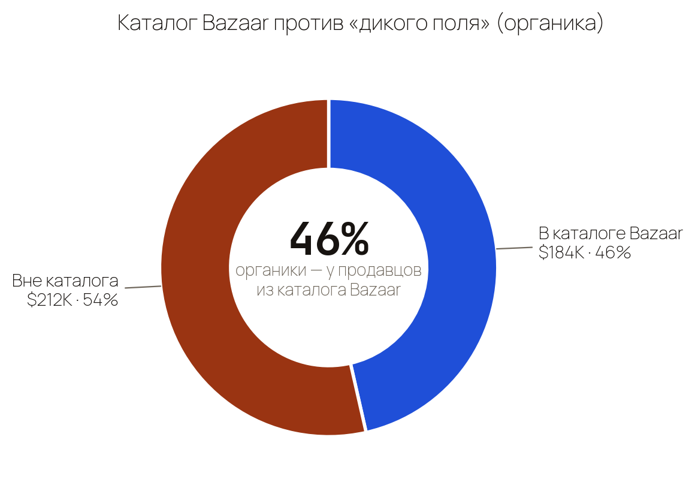
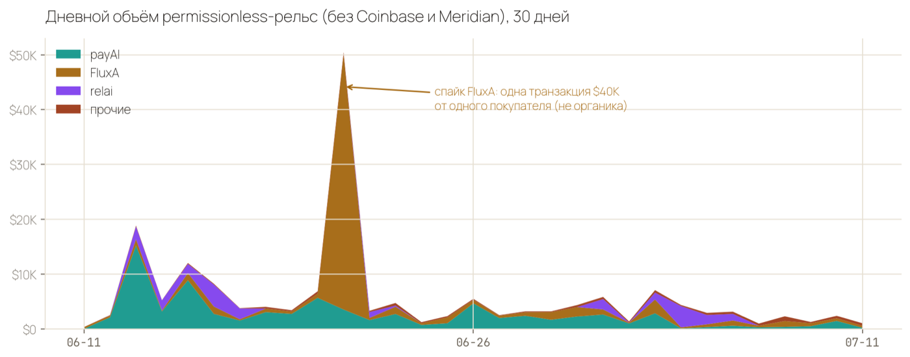
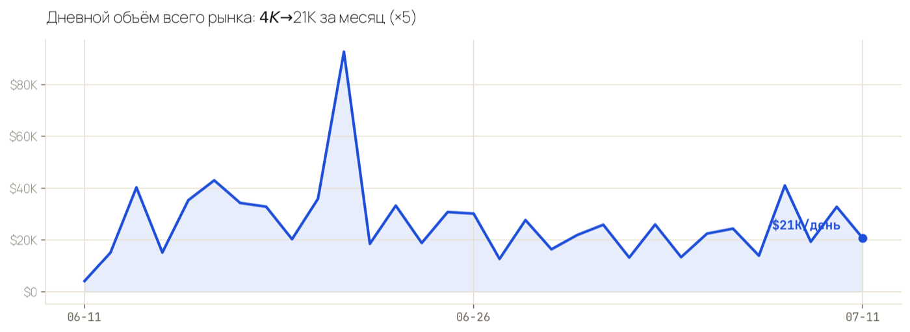
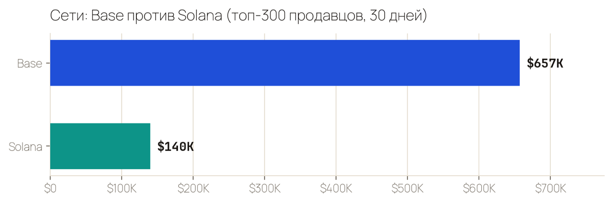

Карта платёжного контура x402: настоящие объёмы после вычета накруток, вскрытие рельс без паспортных требований — и честный ответ, стоит ли становиться фасилитатором или строить свой LLM-роутер.
402 + реквизиты: payTo-адрес, сумма, USDC, сеть.
x402scan tRPC · public.facilitators.list · timeframe=30d · снято 12.07.2026 · matplotlib

топ-300 продавцов (96% рынка) · фильтр wash: mrdn целиком + (≤2 покупателей и >$5K)

каждая точка — продавец с объёмом от $20 за 30 дней · оси логарифмические · x402scan sellers.all.list

объём ÷ транзакции, 30 дней

сверка по 1 185 payTo-адресам из 25 298 ресурсов каталога

x402scan stats.bucketed по facilitatorIds · 30 суточных бакетов

весь рынок, 30 суточных бакетов

топ-300 продавцов, 30 дней
Шесть ресёрч-агентов вскрыли все живые permissionless-фасилитаторы: архитектуру, бизнес-модель, команды, GitHub-активность. Сквозной паттерн: «бесплатно и без документов» почти всегда означает одно из четырёх — токен с будущей монетизацией, freemium-воронку, донаты или непрозрачную venture-модель.
| Рельса | Объём 30д | Комиссия продавцу | Токен | Кто держит | GitHub | Онбординг |
|---|---|---|---|---|---|---|
| payAI | $78K | 0 до 10K tx/мес, дальше $0.001/tx | PAYAI ~$6M cap | анонимная команда | коммиты 10 июля | без регистрации до 10K tx/мес; для прода — API-ключ |
| FluxA | $69K ⚠ | не раскрыта | нет данных | FluxA-Agent-Payment, 11 репо (ZK-batch, AEP2) | активный | agent-id, без паспорта |
| relai | $23K | $0 — zero markup, газ поглощают | упоминается, цифр нет | соло-мейнтейнер web3luka | npm живой (0.6.x) | npm-пакет, минуты |
| Dexter | $1.8K | 0 до 1000 tx/мес | $DEXTER → equity | Dexter Labs Corp. | самый живой (коммиты ежедневно) | указать URL, без ключей |
| Primer | $1.4K | не раскрыта | нет | Primer Systems | push 7 июля | без регистрации |
| Daydreams | $0.6K | 0% | DREAMS | daydreamsai (agent-фреймворк) | ядро 4 мес без коммитов | без регистрации |
| OpenX402 | $0.4K | 0, «free» | нет данных | команда не найдена | заявленный репо — 404 | без логина |
| AnySpend / B3 | $4.2K | не раскрыта | $ANY airdrop | B3 (гейминг L3) | холодный: 5+ мес | npm, <1 мин |
| x402.rs hosted | $12 | testnet бесплатно | нет | код open source, хостит FareSide (freemium) | коммит 8 июля, 277★ | docker run, 10–20 мин |
| OpenFacilitator | $12 | $0, донаты | нет | соло rawgroundbeef, Apache-2.0 | месяц назад | docker compose, 15–30 мин |
Стандартные /verify и /settle, релеер сам платит газ. Тарифы: Free Forever (10 000 расчётов/мес), дальше $0.001 за расчёт; для production-объёмов нужны API-ключи — маркетинговое «no accounts» на главной шире реальности. Реально живой GitHub. Риск-флаги: собственный токен PAYAI (~$6M cap) уже раз мигрировал контракт, найден стейкинг с заявленными 91% APR, команда анонимна, «фаундер» при проверке оказался омонимом руководителя другой компании. Продукт рабочий, но за бесплатностью стоит токен-экономика — закладывай возможность миграции.
Единственный, кто прямо пишет: «zero markup, газ поглощаем». Solana ~400 мс, SKALE — вообще без газа. Но весь фасилитатор фактически держит один npm-мейнтейнер (web3luka) — bus-factor = 1. Хорош как вторая рельса, не как единственная.
Batch-settlement с ZK-схемой (свой форк x402-rs), протокол AEP2 «authorize now, settle later», агентские ко-кошельки со спенд-контролем, монетизация MCP-серверов одной строкой. Бизнес-модель не раскрыта, а ~58% месячного объёма ($40.1K из $69.3K) сделала одна транзакция от одного покупателя — витрину делить надвое.
Solana + 7 EVM-сетей одним URL, единственный распознаёт платежи из смарт-кошельков (Squads/SWIG) через симуляцию. GitHub-организация коммитит ежедневно, своя витрина x402gle.com. Но токен $DEXTER конвертируется в equity компании — громкие заявления «обогнал Coinbase по трафику» из крипто-прессы наш ончейн-срез по долларам не подтверждает: $1.8K/мес объёма.
x402-rs (Rust, 277★, коммит 8 июля, боевой код FareSide): docker run ghcr.io/x402-rs/x402-facilitator + config.json с приватником релеера + газ-баланс. OpenFacilitator (TypeScript, Apache-2.0): docker compose up -d, дашборд из коробки. Газ на Base — сотые доли цента за расчёт. Единственный настоящий риск self-host — ты сам держишь hot-wallet релеера. Для СВОИХ эндпоинтов — легально и просто; публичный сервис для чужих мерчантов из Грузии — уже VASP-территория (см. ниже).
Два отдельных финансовых агента разобрали обе модели с числами из этого аудита. Вердикты совпали.
| Критерий | А · Фасилитатор | Б · LLM-роутер |
|---|---|---|
| Реалистичный доход через 6 мес | $0–50/мес | $100–500/мес — вывод из таблицы ресёрча: $2–10K/мес объёма × ~5% маржи |
| Что нужно для $2K/мес | провести $400K–2.5M/мес — от 4 до 22 объёмов всей без-KYC органики | $40K/мес объёма = 27% от лидера с вирусной дистрибуцией |
| Главный блокер | цена в нише = $0 + VASP-лицензия НБГ (~$10.3K, 3–4 мес) | анти-ресейл ToS всех провайдеров + сжимающийся рынок |
| Капитал на старт | низкий, но лицензия $10.3K для легальной работы с чужими мерчантами | float $4–7K + инфраструктура |
| Вероятность успеха (оценка агентов) | низкая — агент даёт качественную оценку, без числа | 10–15% |
| Что делать вместо этого | x402 — не бизнес, а платёжный метод. Продавать через него СВОИ ресурсы (TTS, данные, MCP-инструменты) на чужой бесплатной рельсе: payAI или relai как основная, self-host x402-rs как запасная. Ценность и объём приходят от продукта, а не от прослойки — у прослоек маржа уже съедена гонкой к нулю. | |
Методология wash-фильтра: продавец помечен накруткой, если весь поток идёт через Meridian (получатель №1 — адрес самого фасилитатора, токен MRDN с кэшбэком за объём) либо ≤2 покупателей при объёме >$5K. Итог 48% сошёлся с независимой оценкой Artemis (~50%). Сумма по фасилитаторам сошлась с витриной x402scan с точностью 0.03%. Все числа страницы проверены отдельным агентом-верификатором; выпуск прошёл приёмку агента корпоративного контроля.